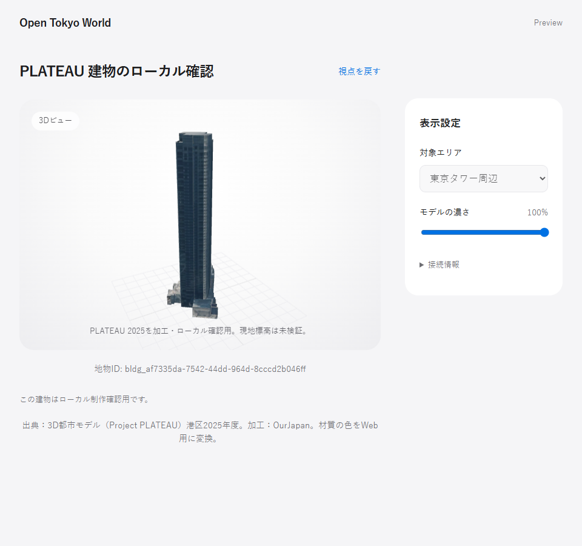
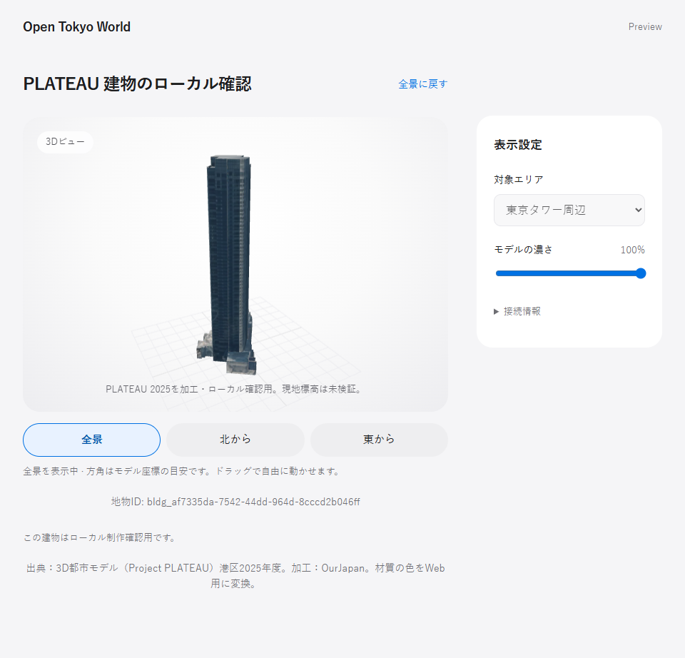
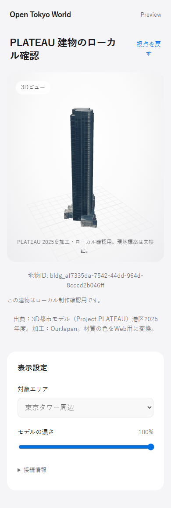
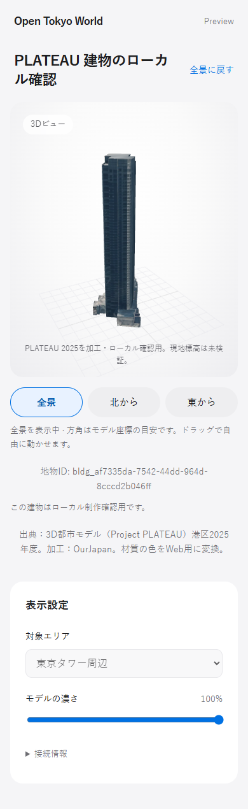
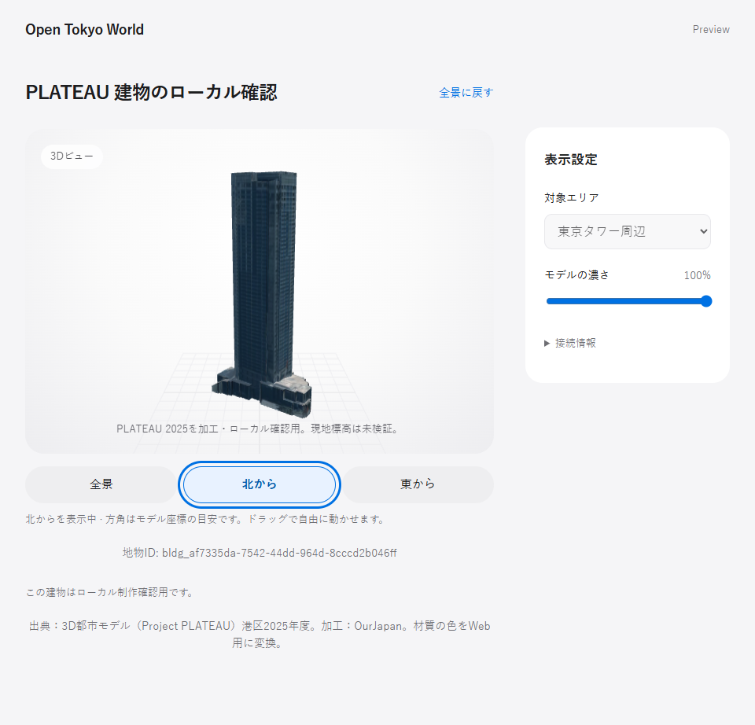
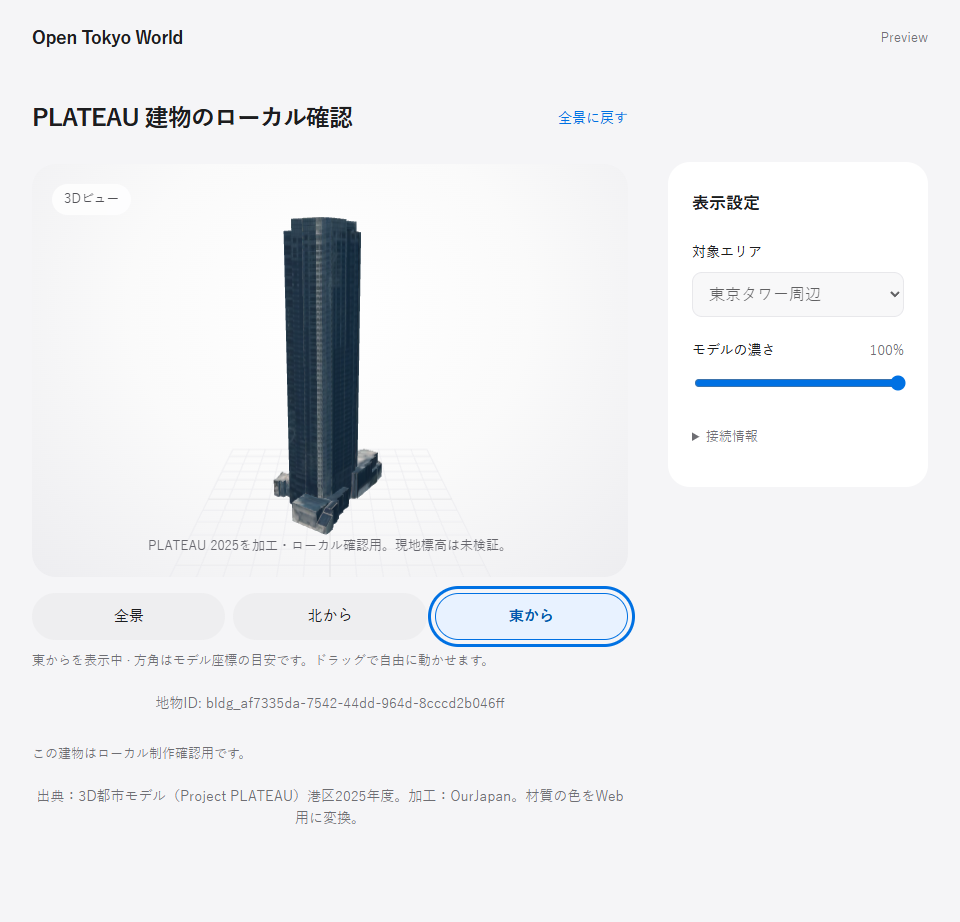

最新main 3b1eb5fへ統合。Beforeはローカル表示のみのd9da129、Afterはプリセット追加後の52175b1。同一GLB・ブラウザ・viewportで再撮影しました。モデル形状の変更はありません。






Mobile 東から / Before 全景canvas / After 全景canvas / main 通常モデルcanvas / After 通常モデルcanvas。全景と通常モデルの各比較はPNGがバイト一致。
Safari実機・実機タッチ・スクリーンリーダーは未検証。北・東はモデル座標の目安で、測量済み方位や現地標高ではありません。出典: Project PLATEAU 港区2025年度、加工: OurJapan。PNGは比較用に公開承認済み。GLB・blend・テクスチャ素材は含みません。